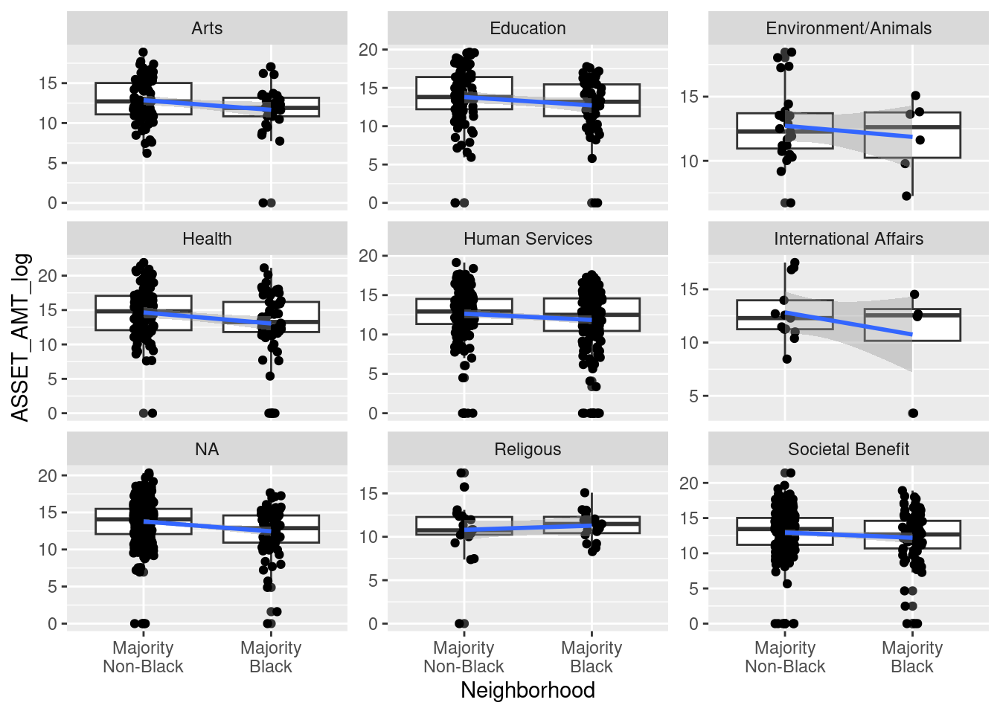
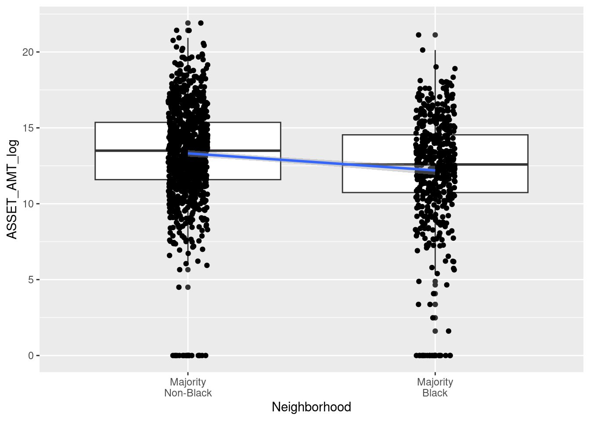
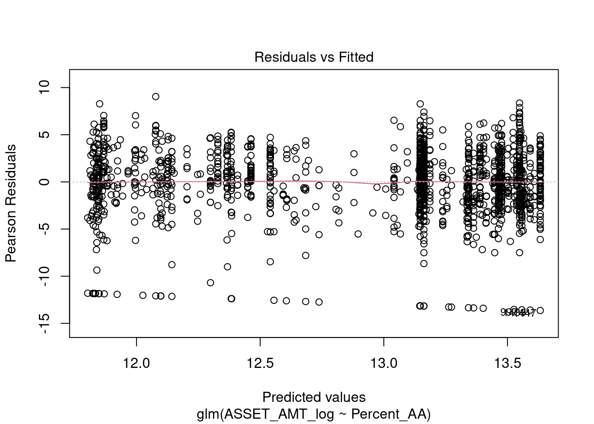
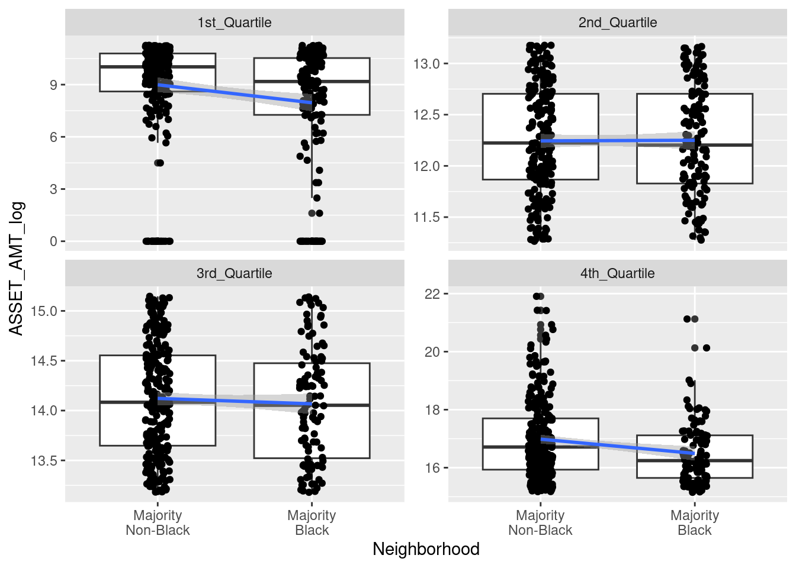
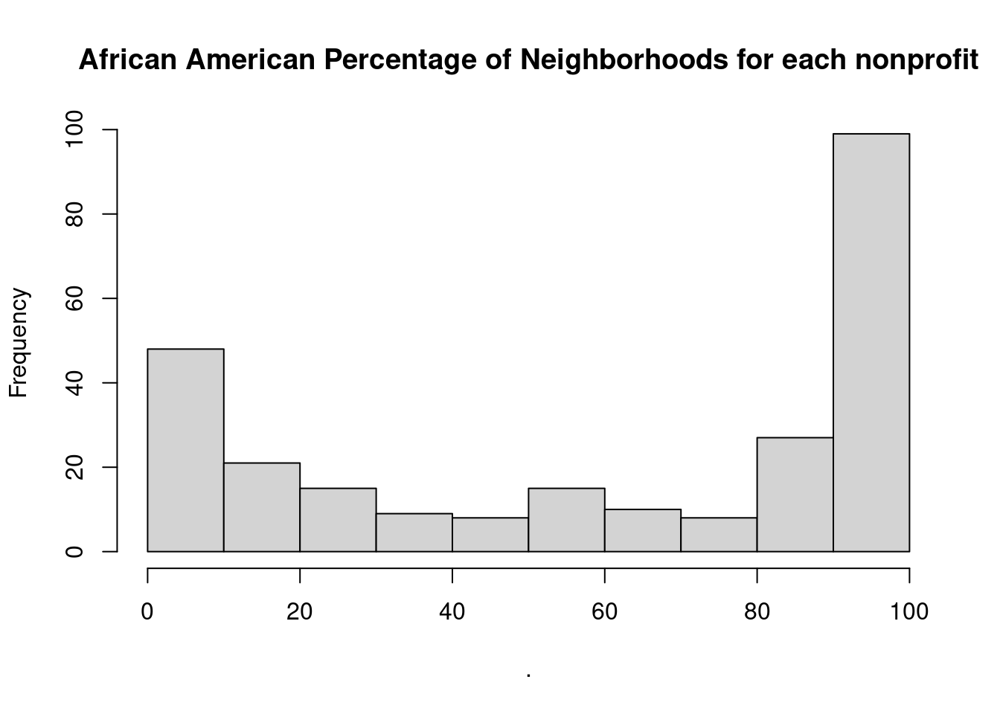

Baltimore Nonprofit Analysis
Data Import
## Warning: Expecting numeric in W4084 / R4084C23: got 'of art'Information about the data: Here’s an article describing some of the datasets from the IRS 990s. We’re using the Business Master File (BMF). There’s a section titled “Minimum Filing Threshold” that explains a data limitation (and why we’re seeing so many 0’s). See here for more info.
It seems that if there is a value less than 50,000 other than zero, it must mean that the organization decided to submit to the IRS, because otherwise they would be listed as a zero. It is not possible to distinguish a true zero from a zero due to not meeting the threshold of 50,000 and just not submitting. See this guide, page 5 in the “minimum filing threshold” section.
It therefore makes sense to remove zero values and to report this caveat that the data is incomplete because many nonprofits that had assets less than 50,000 are not included.
However for the high vs nonhigh asset we could keep these - because zero values would still be less than the threshold regardless.
Adding to this NA values can be considered less than 50000, as organizations are not required to report an amount if they have less than 50000.
Tidying data and Exploratory Analysis
Asset amount
First let’s check how many zero values there are for asset amounts.
## [1] 1218Now we will check if there are NA values for asset
amounts.
Yes, indeed there are…
NA and zero values likely mean the nonprofit did not need to submit to the IRS. It is impossible to know however, if a zero is actually a true zero. NA values could mean something else.
Thus, we will recode asset amount based on a threshold of greater than or equal to 50,000 as high asset and less than 50000 (including zero) as not high asset. Note we keep our NA values with this recoding.
df_simplified<-df_simplified %>%
# modify Asset amount variable to be numeric
mutate(ASSET_AMT =as.numeric(ASSET_AMT)) %>%
#create a variable about high asset amount (threshold being $500,000)
mutate(ASSET_High = case_when(ASSET_AMT >= 500000 ~ TRUE,
ASSET_AMT < 500000 ~ FALSE))Here we can see the NA values:
##
## FALSE TRUE <NA>
## 1954 761 1368Now we will replace NA values with False as
well:
df_simplified <- df_simplified %>%
mutate(ASSET_High = replace_na(ASSET_High, FALSE)) #NA values will be coded as not high asset (if no cases match the other two ASSET_AMT statements then code as FALSE) based on the above logicCheck that this worked and that there are no NA values now:
##
## FALSE TRUE <NA>
## 3322 761 0Now we will convert these to text as another variable and also create a log version of the asset amount to normalize it, as plots and analysis may be easier to interpret if there are many values that are high or low.
Neighborhood category
Next we will modify the data to include a variable about the percentage of African American/Black people.
# create new Percent_AA variable by converting
#`Normalized African American Population` variable
#into a percentage and rounding
df_simplified<-df_simplified %>%
mutate(Percent_AA =
round(`Normalized African American Population`*100, digits = 1)) %>%
# create new Majority_AA variable that indicates if Percent_AA is greater than or equal to 50% or not
mutate(Majority_AA = case_when(
Percent_AA >= 50 ~ "Yes",
Percent_AA < 50 ~ "No")) %>%
# create a new variable about this in text
mutate(Neighborhood = case_when(
Percent_AA >= 50 ~ "Majority\nBlack",
Percent_AA < 50 ~ "Majority\nNon-Black")) %>%
# make this a factor and order by level appearance in the data
mutate(Neighborhood = as_factor(Neighborhood),
Neighborhood = forcats::fct_inorder(Neighborhood))Quantile data
To group the data by quantiles, we first remove organizations with zero assets because we don’t know if zero values are real. If assets are under 50,000, organizations can report as zero also.
Similarly, NA values could be anything between 0 and less than 50,000. Thus we aren’t sure what those asset amounts are.
# make a new dataframe without zeros and NA asset amounts
df_simplified_no_zero<-df_simplified %>%
drop_na(ASSET_AMT) %>% #redundant but shows we are dropping NA values
filter(ASSET_AMT>0) %>% # ASSET_AMT must be greater than zero
# get quartiles
mutate(ASSET_quartile = ntile(ASSET_AMT, 4)) %>%
# create new quartile variable that specifies quartiles by text
mutate(ASSET_quartile_text = case_when(ASSET_quartile == 1 ~ "1st_Quartile",
ASSET_quartile == 2 ~ "2nd_Quartile",
ASSET_quartile == 3 ~ "3rd_Quartile",
ASSET_quartile == 4 ~ "4th_Quartile"))
#Now check:
table(df_simplified_no_zero$ASSET_quartile, useNA = "always")##
## 1 2 3 4 <NA>
## 375 374 374 374 0## Warning: Returning more (or less) than 1 row per `summarise()` group was deprecated in
## dplyr 1.1.0.
## ℹ Please use `reframe()` instead.
## ℹ When switching from `summarise()` to `reframe()`, remember that `reframe()`
## always returns an ungrouped data frame and adjust accordingly.
## Call `lifecycle::last_lifecycle_warnings()` to see where this warning was
## generated.## `summarise()` has grouped output by 'ASSET_quartile_text'. You can override
## using the `.groups` argument.## # A tibble: 8 × 2
## # Groups: ASSET_quartile_text [4]
## ASSET_quartile_text range
## <chr> <dbl>
## 1 1st_Quartile 1
## 2 1st_Quartile 77638
## 3 2nd_Quartile 77996
## 4 2nd_Quartile 528175
## 5 3rd_Quartile 529732
## 6 3rd_Quartile 3783266
## 7 4th_Quartile 3804811
## 8 4th_Quartile 3267270835Without removal (except NAs)- since these asset amounts might influence quartiles.
df_simplified_no_removal<-df_simplified %>%
drop_na(ASSET_AMT) %>% #dropping NA values
# get quartiles
mutate(ASSET_quartile = ntile(ASSET_AMT, 4)) %>%
# create new quartile variable that specifies quartiles by text
mutate(ASSET_quartile_text = case_when(ASSET_quartile == 1 ~ "1st_Quartile",
ASSET_quartile == 2 ~ "2nd_Quartile",
ASSET_quartile == 3 ~ "3rd_Quartile",
ASSET_quartile == 4 ~ "4th_Quartile"))
#Now check:
table(df_simplified_no_removal$ASSET_quartile, useNA = "always")##
## 1 2 3 4 <NA>
## 679 679 679 678 0## Warning: Returning more (or less) than 1 row per `summarise()` group was deprecated in
## dplyr 1.1.0.
## ℹ Please use `reframe()` instead.
## ℹ When switching from `summarise()` to `reframe()`, remember that `reframe()`
## always returns an ungrouped data frame and adjust accordingly.
## Call `lifecycle::last_lifecycle_warnings()` to see where this warning was
## generated.## `summarise()` has grouped output by 'ASSET_quartile_text'. You can override
## using the `.groups` argument.## # A tibble: 8 × 2
## # Groups: ASSET_quartile_text [4]
## ASSET_quartile_text range
## <chr> <dbl>
## 1 1st_Quartile 0
## 2 1st_Quartile 0
## 3 2nd_Quartile 0
## 4 2nd_Quartile 8141
## 5 3rd_Quartile 8251
## 6 3rd_Quartile 735297
## 7 4th_Quartile 738933
## 8 4th_Quartile 3267270835Turns out this doesn’t really work because the 1st and 2nd quartiles can’t be distinguished as we don’t know if the values of 0 are actually some number below 50,000 and both quartlies have a max of less than 50,000. So we will stick with our removal.
National Taxonomy of Exempt Entities (NTEE) recoding
To provide more information to readers about what the nonprofits do, we will convert the National Taxonomy of Exempt Entities (NTEE) codes based on this and this (see page 15).
df_simplified <-df_simplified %>%
mutate(NTEE_text = case_when(
str_starts(NTEE_CD, pattern = "A")~ "Arts", # if NTEE_CD starts with A make new variable value "Arts" etc.
str_starts(NTEE_CD, pattern = "B") ~ "Education",
str_starts(NTEE_CD, pattern = "C|D") ~ "Environment/Animals", # if NTEE_CD value starts with C or D make new variable value "Environment/Animals"
str_starts(NTEE_CD, pattern = "E|F|G|H") ~ "Health",
str_starts(NTEE_CD, pattern = "I|J|K|L|M|N|O|P") ~ "Human Services",
str_starts(NTEE_CD, pattern = "Q") ~ "International Affairs",
str_starts(NTEE_CD, pattern = "R|S|T|U|V|W") ~ "Societal Benefit",
str_starts(NTEE_CD, pattern = "X") ~ "Religious",
TRUE ~ "NA")) # this line is redundant as this would happen automatically - but everything else will be NAAlso for the quantile data:
df_simplified_no_zero <-df_simplified_no_zero %>%
mutate(NTEE_text = case_when(
str_starts(NTEE_CD, pattern = "A")~ "Arts", # if NTEE_CD starts with A make new variable value "Arts" etc.
str_starts(NTEE_CD, pattern = "B") ~ "Education",
str_starts(NTEE_CD, pattern = "C|D") ~ "Environment/Animals", # if NTEE_CD value starts with C or D make new variable value "Environment/Animals"
str_starts(NTEE_CD, pattern = "E|F|G|H") ~ "Health",
str_starts(NTEE_CD, pattern = "I|J|K|L|M|N|O|P") ~ "Human Services",
str_starts(NTEE_CD, pattern = "Q") ~ "International Affairs",
str_starts(NTEE_CD, pattern = "R|S|T|U|V|W") ~ "Societal Benefit",
str_starts(NTEE_CD, pattern = "X") ~ "Religous",
TRUE ~ "NA")) # this line is redundant as this would happen automatically - but everything else will be NAVisualizations and Analysis
Deeper possible visualizations
First without log normalization figure:
df_simplified_no_zero %>%
ggplot(aes(y = ASSET_AMT, x = Percent_AA)) +
geom_point() + geom_smooth(method = "loess")## `geom_smooth()` using formula = 'y ~ x'We can see that some of the dat points are much higher and this makes it challenging to see the lower data values.
Now let’s look at normalized version.
Overall log Asset amount figure:
df_simplified_no_zero %>%
ggplot(aes(y = ASSET_AMT_log, x = Percent_AA)) +
geom_point() + geom_smooth(method = "loess")## `geom_smooth()` using formula = 'y ~ x'Quartile plots
Quartiles with log asset data:
df_simplified_no_zero %>%
ggplot(aes(y = ASSET_AMT_log, x = Percent_AA)) +
geom_point() + facet_wrap(~ ASSET_quartile_text, scales = "free") +geom_smooth()## `geom_smooth()` using method = 'loess' and formula = 'y ~ x'Look at log asset data for each NTEE type- remember the caveat that there are many organizations that are not included because of NA or zero value ASSET_AMT. However, still we can see that there is a trend towards lower amount of assets for most categories even with this limited data.
df_simplified_no_zero %>%
ggplot(aes(y = ASSET_AMT_log, x = Neighborhood)) +
geom_boxplot()+ geom_jitter(width = .08) +
facet_wrap(~ NTEE_text, scales = "free_y") +
geom_smooth(method = "lm", se=TRUE, aes(group=1))## `geom_smooth()` using formula = 'y ~ x'
Compare all organizations by neighborhood AA status for log asset data. remember the caveat that there are many organizations that are not included because of NA or zero value ASSET_AMT
df_simplified_no_zero %>%
ggplot(aes(y = ASSET_AMT_log, x = Neighborhood)) +
geom_boxplot()+ geom_jitter(width = .08) + geom_smooth(method = "lm", se=TRUE, aes(group=1))## `geom_smooth()` using formula = 'y ~ x'
Association Tests
summary(glm(data = df_simplified_no_zero, ASSET_AMT ~Percent_AA)) # for every increase in percent AA of the neighborhood there was a 266,249$ decrease in asset amount of the nonprofits in the neighborhood##
## Call:
## glm(formula = ASSET_AMT ~ Percent_AA, data = df_simplified_no_zero)
##
## Coefficients:
## Estimate Std. Error t value Pr(>|t|)
## (Intercept) 29664870 5349712 5.545 3.47e-08 ***
## Percent_AA -266249 107553 -2.476 0.0134 *
## ---
## Signif. codes: 0 '***' 0.001 '**' 0.01 '*' 0.05 '.' 0.1 ' ' 1
##
## (Dispersion parameter for gaussian family taken to be 1.84704e+16)
##
## Null deviance: 2.7726e+19 on 1496 degrees of freedom
## Residual deviance: 2.7613e+19 on 1495 degrees of freedom
## AIC: 60322
##
## Number of Fisher Scoring iterations: 2# there is a less than 5% risk of concluding that an association exists between asset amount a percent AA of neighborhood when there is no actual association.
hist(df_simplified_no_zero$ASSET_AMT_log)summary(glm(data = df_simplified_no_zero, ASSET_AMT_log~Percent_AA)) # for every increase in percent AA of the neighborhood there was a 266,249$ decrease in asset amount of the nonprofits in the neighborhood##
## Call:
## glm(formula = ASSET_AMT_log ~ Percent_AA, data = df_simplified_no_zero)
##
## Coefficients:
## Estimate Std. Error t value Pr(>|t|)
## (Intercept) 13.632645 0.135946 100.280 < 2e-16 ***
## Percent_AA -0.018598 0.002733 -6.805 1.46e-11 ***
## ---
## Signif. codes: 0 '***' 0.001 '**' 0.01 '*' 0.05 '.' 0.1 ' ' 1
##
## (Dispersion parameter for gaussian family taken to be 11.92755)
##
## Null deviance: 18384 on 1496 degrees of freedom
## Residual deviance: 17832 on 1495 degrees of freedom
## AIC: 7963.1
##
## Number of Fisher Scoring iterations: 2
#nonparametric test - because the residiuals looked skewed in the above qqplot
cor.test(df_simplified_no_zero$ASSET_AMT, df_simplified_no_zero$Percent_AA, method = "spearman", exact = FALSE)##
## Spearman's rank correlation rho
##
## data: df_simplified_no_zero$ASSET_AMT and df_simplified_no_zero$Percent_AA
## S = 641433720, p-value = 1.055e-08
## alternative hypothesis: true rho is not equal to 0
## sample estimates:
## rho
## -0.1471965Look at quartiles with log asset data: remember the caveat that there are many organizations that are not included because of NA or zero value ASSET_AMT
df_simplified_no_zero %>%
ggplot(aes(y = ASSET_AMT_log, x = Neighborhood)) +
geom_boxplot()+ geom_jitter(width = .08) + geom_smooth(method = "lm", se=TRUE, aes(group=1)) + facet_wrap(~ASSET_quartile_text, scales = "free_y")## `geom_smooth()` using formula = 'y ~ x'
First create data to make visualization easier caveat for the data: that there are many organizations that are not included because of NA or zero value ASSET_AMT
quartile_data <-df_simplified_no_zero %>%
group_by(ASSET_quartile_text, Neighborhood) %>%
count()
quartile_data## # A tibble: 8 × 3
## # Groups: ASSET_quartile_text, Neighborhood [8]
## ASSET_quartile_text Neighborhood n
## <chr> <fct> <int>
## 1 1st_Quartile "Majority\nNon-Black" 217
## 2 1st_Quartile "Majority\nBlack" 158
## 3 2nd_Quartile "Majority\nNon-Black" 235
## 4 2nd_Quartile "Majority\nBlack" 139
## 5 3rd_Quartile "Majority\nNon-Black" 263
## 6 3rd_Quartile "Majority\nBlack" 111
## 7 4th_Quartile "Majority\nNon-Black" 268
## 8 4th_Quartile "Majority\nBlack" 106Create percentage variable for each quantile
quartile_data <- quartile_data %>%
group_by(ASSET_quartile_text) %>%
mutate(Percent = round(n/sum(n)*100))
quartile_data## # A tibble: 8 × 4
## # Groups: ASSET_quartile_text [4]
## ASSET_quartile_text Neighborhood n Percent
## <chr> <fct> <int> <dbl>
## 1 1st_Quartile "Majority\nNon-Black" 217 58
## 2 1st_Quartile "Majority\nBlack" 158 42
## 3 2nd_Quartile "Majority\nNon-Black" 235 63
## 4 2nd_Quartile "Majority\nBlack" 139 37
## 5 3rd_Quartile "Majority\nNon-Black" 263 70
## 6 3rd_Quartile "Majority\nBlack" 111 30
## 7 4th_Quartile "Majority\nNon-Black" 268 72
## 8 4th_Quartile "Majority\nBlack" 106 28Visuals…of the above data:
quart_plot <- quartile_data %>%
ggplot(aes(x= ASSET_quartile_text, y = Percent, fill = Neighborhood)) +
geom_col(position = position_dodge(width = .9))+
scale_y_continuous(labels = function(x) paste0(x, "%")) +
ylim(0,100) +
scale_fill_grey() +
theme_linedraw() +
geom_text(aes(label = paste0(Percent, "%")), position = position_dodge(width = .9), vjust = -.5) ## Scale for y is already present.
## Adding another scale for y, which will replace the existing scale.quart_plot + labs(x = "Quartile based on nonprofit asset amount", y = "Percentage of nonprofits in the asset quartile")this does NOT include all 4,082 organizations
Overall Percentage Plot
First let’s get a count of each - NOTE we are keeping zero values and NA as low asset! The NA neighborhood means there is only one neighborhood that did not fit the categories or have information. We can drop this neighborhood.
## # A tibble: 5 × 3
## ASSET_High_text Neighborhood n
## <chr> <fct> <int>
## 1 High Asset "Majority\nNon-Black" 539
## 2 High Asset "Majority\nBlack" 222
## 3 Low Asset "Majority\nNon-Black" 1589
## 4 Low Asset "Majority\nBlack" 1732
## 5 Low Asset <NA> 1df_simplified <-df_simplified %>%
drop_na(Neighborhood)
df_simplified %>%
count(ASSET_High_text, Neighborhood)## # A tibble: 4 × 3
## ASSET_High_text Neighborhood n
## <chr> <fct> <int>
## 1 High Asset "Majority\nNon-Black" 539
## 2 High Asset "Majority\nBlack" 222
## 3 Low Asset "Majority\nNon-Black" 1589
## 4 Low Asset "Majority\nBlack" 1732High_asset_data <-df_simplified %>%
group_by(ASSET_High_text, Neighborhood) %>%
count()
High_asset_data## # A tibble: 4 × 3
## # Groups: ASSET_High_text, Neighborhood [4]
## ASSET_High_text Neighborhood n
## <chr> <fct> <int>
## 1 High Asset "Majority\nNon-Black" 539
## 2 High Asset "Majority\nBlack" 222
## 3 Low Asset "Majority\nNon-Black" 1589
## 4 Low Asset "Majority\nBlack" 1732Create percentage variable for each category:
High_asset_data <- High_asset_data %>%
group_by(Neighborhood) %>%
mutate(Percent_AA_cat = round(n/sum(n)*100))
High_asset_data## # A tibble: 4 × 4
## # Groups: Neighborhood [2]
## ASSET_High_text Neighborhood n Percent_AA_cat
## <chr> <fct> <int> <dbl>
## 1 High Asset "Majority\nNon-Black" 539 25
## 2 High Asset "Majority\nBlack" 222 11
## 3 Low Asset "Majority\nNon-Black" 1589 75
## 4 Low Asset "Majority\nBlack" 1732 89Visuals…of the above data:
High_asset_data %>%
ggplot(aes(x= Neighborhood, y = Percent_AA_cat, fill = ASSET_High_text)) +
geom_col(position = position_dodge(width = .9))+
scale_y_continuous(labels = function(x) paste0(x, "%")) +
ylim(0,100) +
geom_text(aes(label = paste0(Percent_AA_cat, "%")), position = position_dodge(width = .9), vjust = -.5) +
ylab("Percent of Neighborhood Category") +
theme_linedraw() +
scale_fill_grey() +
theme(legend.title = element_blank())## Scale for y is already present.
## Adding another scale for y, which will replace the existing scale.this includes all 4,082 organizations
High vs non asset by category
First create data to make visualization easier
High_asset_data <-df_simplified %>%
group_by(ASSET_High_text, Neighborhood, NTEE_text) %>%
count()
High_asset_data## # A tibble: 36 × 4
## # Groups: ASSET_High_text, Neighborhood, NTEE_text [36]
## ASSET_High_text Neighborhood NTEE_text n
## <chr> <fct> <chr> <int>
## 1 High Asset "Majority\nNon-Black" Arts 34
## 2 High Asset "Majority\nNon-Black" Education 54
## 3 High Asset "Majority\nNon-Black" Environment/Animals 9
## 4 High Asset "Majority\nNon-Black" Health 65
## 5 High Asset "Majority\nNon-Black" Human Services 75
## 6 High Asset "Majority\nNon-Black" International Affairs 4
## 7 High Asset "Majority\nNon-Black" NA 174
## 8 High Asset "Majority\nNon-Black" Religious 2
## 9 High Asset "Majority\nNon-Black" Societal Benefit 122
## 10 High Asset "Majority\nBlack" Arts 8
## # ℹ 26 more rows#Create percentage variable for each category
High_asset_data <- High_asset_data %>%
group_by(NTEE_text) %>%
mutate(Percent_ntee_cat = round(n/sum(n)*100))
High_asset_data## # A tibble: 36 × 5
## # Groups: NTEE_text [9]
## ASSET_High_text Neighborhood NTEE_text n Percent_ntee_cat
## <chr> <fct> <chr> <int> <dbl>
## 1 High Asset "Majority\nNon-Black" Arts 34 13
## 2 High Asset "Majority\nNon-Black" Education 54 18
## 3 High Asset "Majority\nNon-Black" Environment/Ani… 9 15
## 4 High Asset "Majority\nNon-Black" Health 65 25
## 5 High Asset "Majority\nNon-Black" Human Services 75 9
## 6 High Asset "Majority\nNon-Black" International A… 4 9
## 7 High Asset "Majority\nNon-Black" NA 174 13
## 8 High Asset "Majority\nNon-Black" Religious 2 0
## 9 High Asset "Majority\nNon-Black" Societal Benefit 122 23
## 10 High Asset "Majority\nBlack" Arts 8 3
## # ℹ 26 more rowsVisuals…of the above data:
High_asset_data %>%
ggplot(aes(x= Neighborhood, y = Percent_ntee_cat, fill = ASSET_High_text)) +
geom_col(position = position_dodge(width = .9))+
scale_y_continuous(labels = function(x) paste0(x, "%")) +
ylim(0, 100) +
geom_text(aes(label = paste0(Percent_ntee_cat, "%")), position = position_dodge(width = .9), vjust = -.5) + facet_wrap(~NTEE_text) +
theme_linedraw() +
scale_fill_grey() +
theme(legend.title = element_blank()) +
ylab("Percentage for each category")this includes all 4,082 organizations
Count plots
## # A tibble: 9 × 2
## NTEE_text count
## <chr> <int>
## 1 Arts 255
## 2 Education 305
## 3 Environment/Animals 59
## 4 Health 264
## 5 Human Services 814
## 6 International Affairs 43
## 7 NA 1333
## 8 Religious 469
## 9 Societal Benefit 540df_simplified %>%
group_by(NTEE_text, Neighborhood) %>%
summarize(count = n()) %>%
mutate(NTEE_text = as_factor(NTEE_text)) %>%
ggplot(aes(x = fct_reorder(NTEE_text, count, min), y = count , fill = Neighborhood)) +
scale_fill_viridis_d() +
geom_col(position =position_dodge(width = .9)) +
ylab ("Number of Organizations") +
theme_linedraw() +
theme(axis.text.x = element_text(angle = 60, vjust = .5),
axis.title.x = element_blank()) +
scale_fill_grey()## `summarise()` has grouped output by 'NTEE_text'. You can override using the
## `.groups` argument.
## Scale for fill is already present. Adding another scale for fill, which will
## replace the existing scale.
This includes all 4,082 organizations There was no removal of organizations based on asset amount, just to get a sense of what oganizations are in Baltimore.
plot2 <- df_simplified %>%
mutate(NTEE_text = as_factor(NTEE_text),
NTEE_text = forcats::fct_relevel(NTEE_text, "International Affairs", "Environment/Animals", "Arts", "Religious", "Health","Education", "Societal Benefit", "Human Services", "NA" )) %>%
group_by(NTEE_text, Neighborhood, ASSET_High_text) %>%
summarize(count = n()) %>%
ggplot(aes(x = NTEE_text, y = count , fill = Neighborhood)) +
geom_col(position =position_dodge(width = .9)) +
facet_grid(rows = vars(ASSET_High_text)) +
ylab ("Number of Organizations") +
theme_linedraw() +
theme(axis.text.x = element_text(angle = 60, vjust = .5),
axis.title.x = element_blank()) +
scale_fill_grey()## `summarise()` has grouped output by 'NTEE_text', 'Neighborhood'. You can
## override using the `.groups` argument.This includes all 4,082 organizations There was no removal of organizations based on asset amount, just to get a sense of what oganizations are in Baltimore.
Distribution of percent AA
Now to take a look at if 50% African American makes sense. What do the neighborhoods look like?
# get the neighborhood values if no removing rows for nonprofits with NA or zero assets
neighborhood_AAperc <- df_simplified %>%
distinct(`neighborhood name`, Percent_AA)
# get the neighborhood values after removing rows for nonprofits with NA or zero assets
neighborhood_AAperc_nozero <- df_simplified_no_zero %>%
distinct(`neighborhood name`, Percent_AA)We can see that there are many neighborhoods that have a more extreme percentage.
# get the neighborhood values if no removing rows for nonprofits with NA or zero assets
neighborhood_AAperc%>% pull(Percent_AA) %>% hist(main = "African American Percentage of Neighborhoods for each nonprofit")